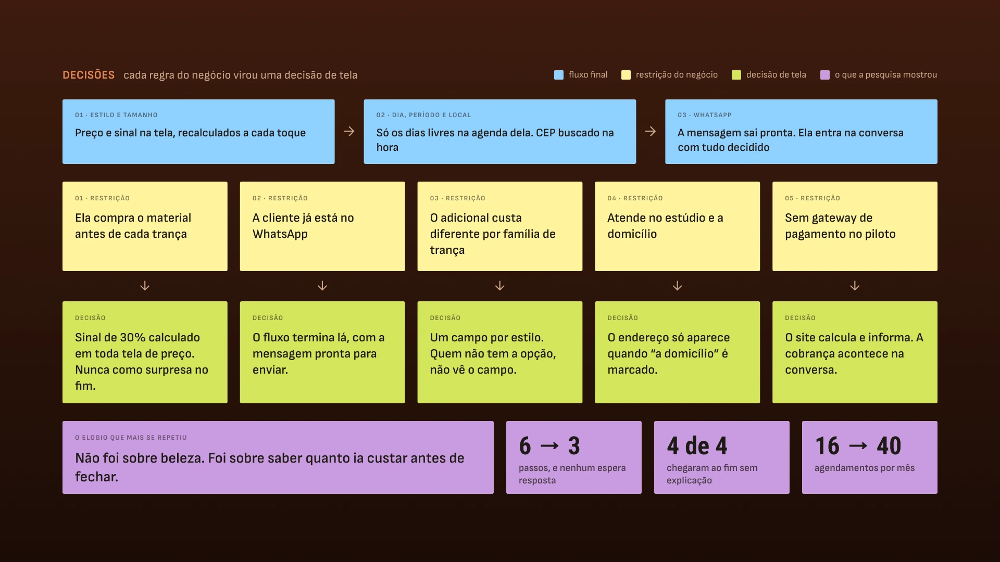
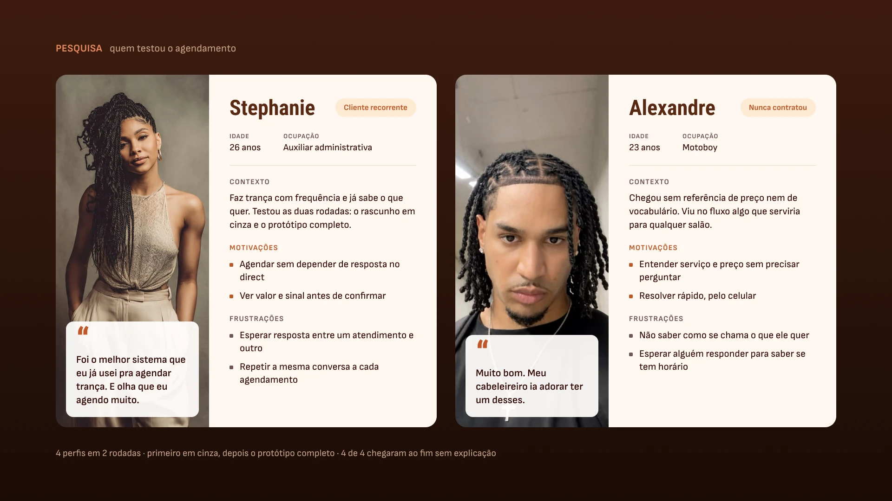

PROJETO REAL · PRODUTO, DESIGN E CÓDIGO · EM OPERAÇÃO
O catálogo dela era um print. Virou um agendamento que não espera resposta.

A Nega Nagô trança há treze anos em São Paulo. Treze categorias e mais de quarenta combinações de preço viviam dentro de uma imagem mandada no direct — e toda dúvida virava uma conversa de ida e volta. Fiz a pesquisa, o desenho, o design system e o código. Os agendamentos passaram de 16 para 40 por mês. Depois do lançamento, a disponibilidade passou a sair da agenda do Google que ela já usa, e o site foi para o ar em neganago.com.
Sobre os números.
Produto entregue e em operação. Os resultados vieram da agenda da Mayara depois do lançamento — são medição, não projeção. A seção 07 mostra como cada um foi apurado, com intervalo de confiança e valor-p.
CLIENTE
Nega Nagô
trancista · São Paulo
PAPEL
Product design
e design engineer
ENTREGAS
Pesquisa · UI · design system
front-end · publicação
FEITO COM
Claude ⇄ Figma via MCP
HTML, CSS e JS · Playwright
Google Agenda (freeBusy) · PHP
PERÍODO
2026 · no ar
neganago.com
01 · O PROBLEMA
A tabela cabia numa foto. A decisão, não.
A cliente abria o print, não achava o preço do tamanho que queria e perguntava. A tabela não estava errada — ela exigia outra pessoa para ser lida.
13
categorias de trança
40+
combinações de tamanho e preço
16
agendamentos por mês, na média
1
canal, respondido entre um cliente e outro
02 · ANTES E DEPOIS
Seis passos com espera viraram três sem espera.
O mesmo objetivo — agendar uma trança — pelos dois caminhos. O que sai não é tela: é o tempo morto entre a dúvida e a resposta.

COMO ERA · SEIS PASSOS
Pede a tabela no direct · recebe um print com 40+ preços · não acha o tamanho que quer · pergunta · espera a resposta entre um atendimento e outro · fecha, ou desiste no meio.
Os passos 3, 4 e 5 dependem da agenda da Mayara. É onde o interesse esfria.

COMO FICOU · TRÊS PASSOS
Escolhe o estilo e o tamanho, com preço e sinal na tela · preenche dia, período e — se for a domicílio — o endereço, com o CEP buscado na hora · envia a mensagem já escrita no WhatsApp.
Nenhum passo espera resposta, e só aparecem os dias que estão livres na agenda dela. A Mayara entra na conversa com tudo já decidido.

01
Por que texto, e não formulário. A Mayara vive no WhatsApp e não vai abrir um painel entre um atendimento e outro.
02
O vocabulário é o dela. A tela chama o penteado de coroa, não de 'serviço' nem de 'item'.
03
Uma ida e volta a menos. A última linha já oferece a foto do cabelo solto, que a trancista precisa ver para estimar.
03 · RESTRIÇÕES
Quase toda decisão de tela veio de uma restrição do negócio.
Nenhuma dessas escolhas saiu de intuição de UX. Saíram de como ela cobra, de onde a cliente já está e do que o piloto podia bancar.


O fluxo não é o desenho ideal.
É o desenho que cabe no jeito que ela já trabalha — e cada post-it verde acima é uma decisão que eu não tomaria olhando só para a tela. A restrição mais recente veio depois do lançamento: quem manda na disponibilidade é a agenda do Google que ela já usava no celular. Ela abre e fecha os dias por lá, do jeito dela, e o site segue — sem painel novo e sem ferramenta nova para aprender.
04 · PESQUISA
Quatro pessoas, duas rodadas. A primeira sem cor nenhuma.
Testei em dois momentos: primeiro um rascunho em cinza, só o caminho; depois o protótipo inteiro. Em cinza, o elogio não tem para onde fugir.

Dá para chegar ao fim? A informação aparece na hora que a pessoa precisa dela? Sem identidade visual, o que sobra na tela é a estrutura — e é ela que está sendo testada.

O encantamento veio aqui, como era de esperar. A diferença é que ele estava sentado em cima de um fluxo que já tinha andado sozinho, sem cor para carregar.
01
Cliente recorrente
Já agenda e sabe os preços de cor. Serve para ver se o fluxo atrapalha quem já tem o caminho na cabeça.
02
Consultou e não fechou
Pediu preço e não voltou. É exatamente o perfil que o projeto existe para recuperar.
03
Contratou uma vez
Conhece o serviço mas não virou hábito. Mostra o que falta para a segunda vez acontecer sozinha.
04
Nunca contratou
Chega sem referência nenhuma — nem de preço, nem de vocabulário. Revela o que a tela precisa explicar sozinha.

De perto, duas das quatro pessoas: a cliente recorrente (01) e quem nunca tinha contratado (04).
O ELOGIO QUE MAIS SE REPETIU
Não foi sobre beleza. Foi sobre saber quanto ia custar.
A conta recalcula a cada toque: muda o tamanho, muda o adicional, muda o local — o total e o sinal mudam junto, na mesma tela. A cliente sai sabendo quanto adianta agora e quanto sobra para o dia. Quando chega para fechar, nada daquilo é novidade — e o que não é novidade não vira objeção. É a primeira restrição da seção anterior fechando o ciclo: a trava do negócio virou o argumento de venda.
4/4
chegaram ao fim do agendamento sem que eu explicasse como funciona
4/4
escolheram exatamente o que queriam, sem hesitar no meio
4/4
apontaram como a melhor experiência de compra entre as que já usaram
2
rodadas: rascunho em cinza e protótipo completo
05 · SISTEMA E ENGENHARIA
Um sistema pequeno, documentado inteiro — e conferido por medição.
Nove conjuntos de componentes, 36 variantes, 29 ícones e dois breakpoints. Nome de variável no Figma é nome de custom property no CSS.
9
conjuntos de componentes · 36 variantes
29
ícones desenhados, de catálogo e de interface
617 KB
a Home inteira, com as treze fotos carregadas
17 → 1,9 MB
as 46 imagens, depois da conversão para WebP

Comparei o código contra o Figma por medição, não a olho.
Uma suíte em Playwright abre o protótipo nos dois breakpoints e lê o valor computado de cada gap, largura e altura. Quatro erros que pareciam certos na tela apareceram assim. Dois deles: no grid do catálogo, o nome mais longo esticava a própria coluna e espremia as vizinhas — na tela passava por diferença de foto, era o track dimensionado pelo conteúdo; e o bloco de endereço recebia o atributo hidden corretamente, mas a classe ganhava do padrão do navegador e ele continuava visível — uma linha consertou outros três lugares que estavam quebrados em silêncio.
06 · CATÁLOGO DE IMAGENS
Nenhuma foto existia. Dirigi e gerei as treze.
Não havia sessão nem banco de imagem. Fechei um contrato visual escrito — manequim, ângulo, fundo, luz, matiz — e variei uma linha por prompt.

A coerência dá para medir.
Amostrei os quatro cantos de cada foto e converti para matiz. Os treze fundos caem entre 12,4° e 19,2° — amplitude de 6,8° em treze gerações independentes. Não foi sorte: o matiz alvo estava escrito no prompt. A prova pelo contrário está no mesmo dado — a luminosidade, que eu não pedi como número, abriu de 35% a 56%. Quando a Mayara fotografar de verdade, cada foto entra no lugar de uma, com os mesmos nomes de arquivo. Nada no código muda.
07 · RESULTADO
Dezesseis agendamentos por mês viraram quarenta.
Os do produto qualquer pessoa reproduz rodando a suíte. Os da operação vieram da agenda da Mayara, comparando antes e depois do lançamento.
16
agendamentos por mês antes do lançamento
40
agendamentos por mês depois
2,50×
razão de taxas · IC 95% 1,37–4,78 · p = 0,0018
3
telas para sair do catálogo com a mensagem pronta
O intervalo de confiança e o valor-p foram calculados sobre os agendamentos observados antes e depois do lançamento, por binomial condicional exata. Não é modelo, é a agenda dela.
O que eu não resolvi.
As imagens de IA ainda não estão identificadas na tela: são renders de referência, não portfólio da Mayara, e está escrito aqui mas precisa estar escrito no produto. Quatro pessoas acham o problema grande, não o de cauda — com o fluxo em operação, dá para observar uso real em vez de sessão marcada, e é esse o próximo passo da pesquisa.
08 · MAIS
Outros projetos
ThumbDrop
Ferramenta interna que tirou a thumbnail da fila do time de design. Duas versões testadas com seis pessoas cada, IA dentro do editor, e o custo por thumb visível antes de cada clique.
Canaltech · Hub de links
A página de links deixou de ser alugada e passou a medir a si mesma. Design system, acessibilidade, consentimento e telemetria dentro de um HTML único.
Disponível para trabalhar
Desenho, escrevo o código e digo o que não deu certo.
Treze anos de design, cinco deles no Canaltech entre design system, marketing e comercial. Se você tem uma superfície que precisa sair pronta e medida, e não especificada, me chama.
© 2026 Erick Teixeira
oerickteixeira@gmail.com · São Paulo